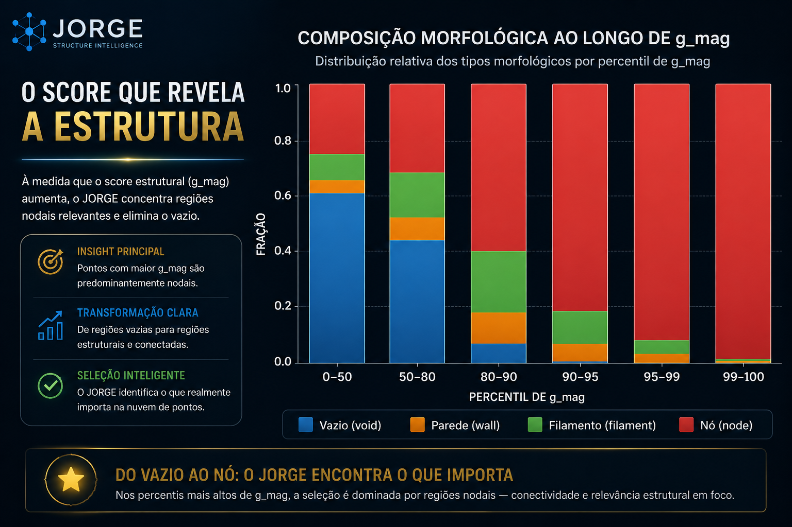

Transforme grandes volumes de dados em leitura estrutural clara, navegável e útil para decisão técnica.
Aplicado a medicina, LiDAR, indústria, geologia e infraestrutura. Processamento local, visualização própria e tecnologia nacional.
O JORGE não depende apenas de narrativa visual. Já existem experimentos comparativos mostrando conectividade superior, menor fragmentação e progressão morfológica coerente.
Resultados iniciais indicam que o score estrutural captura propriedades reais do espaço, além de simples densidade local.
Página dedicada com gráficos executivos e explicações claras para clientes e parceiros.

Uma plataforma criada para revelar estrutura em ambientes complexos, onde apenas volume de dados já não basta.
Destaca relevância, conectividade e organização interna.
Mesmo dataset, mesma lógica, mesma consistência.
Preparado para grandes massas de dados.
Aplicável a múltiplos setores e formatos.
Soluções especializadas construídas sobre a mesma base tecnológica.
Imagem médica, conectividade tumoral e comparação temporal.
Explorar setor →Nuvens massivas, cidades, terreno e infraestrutura.
Explorar setor →Estrutura antes da falha e manutenção preditiva.
Explorar setor →Taludes, mineração, geotecnia e risco espacial.
Explorar setor →Telecom, logística, energia e cidades inteligentes.
Explorar setor →Resultados comparativos, gráficos e validações estruturais.
Explorar setor →Se sua empresa trabalha com dados complexos, grandes volumes ou ambientes críticos, vamos conversar.